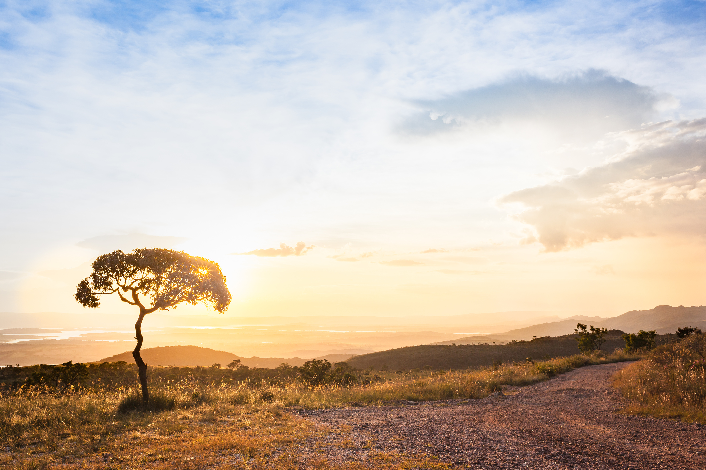

<!DOCTYPE html> <!-- Versão do HTML - HTML 5 -->
<html> <!-- INDICA O Inicio do HTML -->
<head> <!-- Head indica informações para o navegador, como estilo, metas, etc -->
	<meta charset="utf-8"> <!-- Trata todos o caracteres e acentos do teclado -->
	<title>Bioma Cerrado</title>
</head>
<body>

</body>
</html>
<head>
	<meta charset="utf-8">
	<title></title>
</head>
<body>

</body>
</html>
<head>
	<meta charset="utf-8">
	<meta name="viewport" content="width=device-width,initial-scale=1.0">
	<link rel="stylesheet" type="text/css" href="css/estilo.css">	<!-- estilo do site, deixa o site bunito -->
	<title>Cerrado</title>
</head>
<body>
	<h1>Tudo sobre o Bioma Cerrado</h1>
	<p>Aqui você conhecera diversas características sobre o Bioma do Cerrado</p>
	<h2>Clima e Vegetação</h2>
	<p>O clima predominante na região do Cerrado é o tropical sazonal, ou seja, a região é contemplada por um clima quente com períodos de chuva e de seca.

A maioria da sua vegetação se caracteriza por se assemelhar à savana, com árvores de pequeno porte, esparsas com troncos retorcidos, raízes grandes, folhas grossas, arbustos, assim como gramíneas.

<p>Por possuir uma extensa área, o bioma apresenta diversas mudanças em seu ecossistema. Desse modo, pode se classificar os ecossistemas como:</p> 

 <p>-Cerradão</p>
 <p>-Campestre</p>
 <p>-Rupestre</p>
 <p>-Cerrado</p>
 <p>-Típico</p>
 <p>-Matas</p>
 <p>-Campo limpo de cerrado</p>
 <p>-Cerrado de várzeas</p>
 <p>-Cerrado veredas</p></p>

 <figure>
 	

 </figure>

	<h2>Localização do Cerrado brasileiro</h2>
	<p>O Cerrado brasileiro abrange os estados: Amapá, Maranhão, Piauí, Rondônia, Distrito Federal, Goiás, Mato Grosso, Mato Grosso do Sul, Minas Gerais, São Paulo, Tocantins, Bahia.
Localiza-se em três das maiores bacias hidrográficas da América do Sul, (Tocantins-Araguaia, São Francisco e Prata) o que, de certa maneira, favorece sua biodiversidade.</p>
<h2>Fauna e Flora</h2>
<h3>Fauna</h3>
<p>Quando falamos em fauna do Cerrado, fazemos referência às espécies animais que vivem nessa área. No Cerrado, é possível encontrar espécies endêmicas, ou seja, exclusivas dessa região, bem como espécies que vivem em outros biomas. Veja a seguir algumas espécies de animais que podem ser encontradas no Cerrado:</p>
<p>- Cachorro-do-mato-vinagre (Speothos venaticus): O cachorro-do-mato-vinagre ou apenas cachorro-vinagre é uma espécie de pequeno porte que possui corpo compacto e pernas e cauda curtas. Esses animais, que podem ser encontrados sozinhos ou em grupo, possuem uma dieta exclusivamente carnívora.</p>
<p>- Ema (Rhea americana): A ema é considerada a maior e mais pesada ave brasileira. É um animal onívoro que se alimenta de frutos, sementes, folhas, insetos e animais de pequeno porte, como rãs. Apesar de serem classificadas como aves, as emas não voam.</p>
<p>- Lobo-guará (Chrysocyon brachyurus): O lobo-guará é um canídeo bastante típico do Cerrado, sendo considerado o maior canídeo da América do Sul. Apesar de grande, é um animal pouco agressivo. Entre os participantes de sua dieta, podemos citar alguns pequenos animais e frutos típicos do Cerrado, como a lobeira.</p>
<p>- Queixada (Tayassu pecari): Queixada é um animal encontrado em grupos. Esses animais são mais ativos no começo da manhã e no fim da tarde. Sua alimentação é composta, principalmente, de frutos, apesar de se alimentarem também de insetos e minhocas.</p>
<p>- Seriema (Cariama cristata): A seriema é uma ave territorial de médio porte. Alimenta-se de insetos e pequenos vertebrados. Uma característica marcante da seriema é que ela prefere correr em vez de voar.</p>
<p>- Suçuarana (Puma concolor): A suçuarana é um animal que se destaca pelo seu tamanho, sendo classificado como o segundo maior felino das Américas, perdendo apenas para a onça-pintada. Esse animal, também conhecido como onça-parda, é carnívoro e apresenta hábito solitário, formando pares apenas no período de reprodução.</p>
<p>- Tamanduá- bandeira (Myrmecophaga tridactyla): O tamanduá-bandeira é um animal que apresenta longos pelos, membros fortes e focinho longo. Essa espécie é, geralmente, encontrada sozinha. Sua alimentação é constituída, principalmente, de cupins e formigas.</p>
<p>- Tamanduá-mirim (Tamandua tetradactyla): O tamanduá-mirim é uma espécie que apresenta pelos curtos de coloração amarelada. Podem apresentar duas listras pretas marcantes que partem da região da escápula. Esses animais alimentam-se, preferencialmente, de cupins e formigas.</p>
<p>- Veado-campeiro (Ozotoceros bezoarticus): O veado-campeiro é um animal que vive, geralmente, em pequenos grupos. Alimenta-se de folhas, arbustos e flores, preferindo sempre aquelas porções mais fáceis de digerir.</p>

<h3>Flora</h3>

<p>A flora do Cerrado é bastante diversificada, apresentando plantas com as mais variadas particularidades. Apesar das diferenças, a maioria das espécies apresenta certas características em comum: árvores de pequeno porte, caule retorcido e casca e folhas grossas. Segundo o Ministério do Meio Ambiente e a Secretaria de Biodiversidade e Florestas, essas características são resultado de um desequilíbrio no teor de micronutrientes, como do alumínio.</p>
<p>Veja a seguir algumas importantes plantas encontradas no Cerrado:</p>
<p>- Araticum (Annona crassiflora): Essa planta possui frutos com alto valor nutritivo, que podem ser comidos in natura ou utilizados para fazer geleias, sorvetes e sucos. O fruto do araticum possui ótimo sabor e aroma.</p>
<p>- Baru (Dypteryx alata): O baru é uma árvore frutífera nativa do Cerrado que apresenta grande importância na alimentação. Tanto a polpa quanto a amêndoa do baru podem ser consumidas, sendo essa última ingerida in natura ou torrada.</p>
<p>- Buriti (Mauritia flexuosa): O buriti é uma espécie de palmeira que apresenta grande aplicação econômica. Suas folhas são usadas para artesanato, e seus frutos podem ser utilizados na alimentação e na fabricação do óleo de buriti, que possui valor medicinal.</p>
<p>- Cajuzinho-do-cerrado (Anacardium humile): Essa planta é nativa do Cerrado brasileiro e caracteriza-se pela presença de um pseudofruto (parte carnosa), que pode ser comido in natura ou ser usado para fazer doces, sorvetes e bebidas.</p>
<p>- Ipê-amarelo-do-cerrado (Tabebuia aurea): Os ipês são plantas características do Cerrado. Destacam-se pela beleza de suas flores, sendo, por isso, muito usadas no paisagismo. Além disso, apresentam uma madeira resistente, que pode ser usada na marcenaria.</p>
<p>- Jatobá (Hymenaea courbaril): O jatobá é uma árvore que apresenta frutos em forma de vagens, cujas sementes são envoltas por uma espécie de farinha comestível.</p>
<p>- Lobeira (Solanum lycocarpum): A lobeira, uma planta bastante encontrada no Cerrado, apresenta frutos que servem de alimento para vários animais, como o lobo-guará.</p>
<p>- Mangabeira (Hancornia speciosa): A palavra “mangaba” tem origem indígena e significa “coisa boa de comer”. Diante desse nome, fica claro que se trata de uma planta com frutos saborosos e muito consumidos</p>
<p>- Pequizeiro (Caryocar brasiliensis): O pequizeiro é uma árvore que produz frutos conhecidos como pequi, utilizados na culinária. O óleo da polpa de pequi tem aplicações medicinais, além de ser utilizado na fabricação de cosméticos.</p>
<h2>Desmatamento do Cerrado</h2>
<p>A despeito de apresentar uma rica grande biodiversidade esse bioma vem sofrendo muito com o desmatamento, principalmente ocasionados pela agricultura.</p>
<p>Hoje, o bioma conserva apenas 20% de sua área total, passando por um grande processo de descaracterização, ou seja, ocupado por grandes pastagens de gado e extensas plantações de soja, algodão, cana, eucalipto.</p>
<p>Além disso, grande parte do cerrado já foi destruída pelo desenfreado processo de urbanização.</p>
<p>O desmatamento e a caça ilegal, o contrabando de espécies e as queimadas, ameaçam o habitat de muitas espécies, levando, dessa maneira, a sua extinção.</p>


</body>
</html> <!-- INDICA O fim do HTML -->